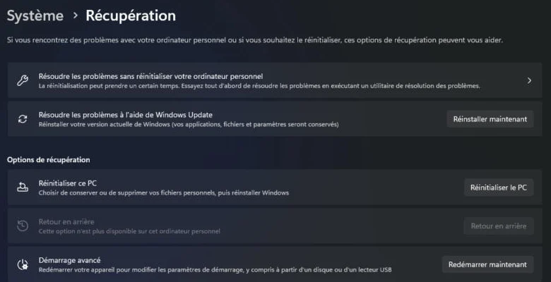
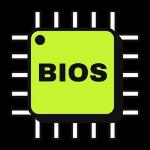
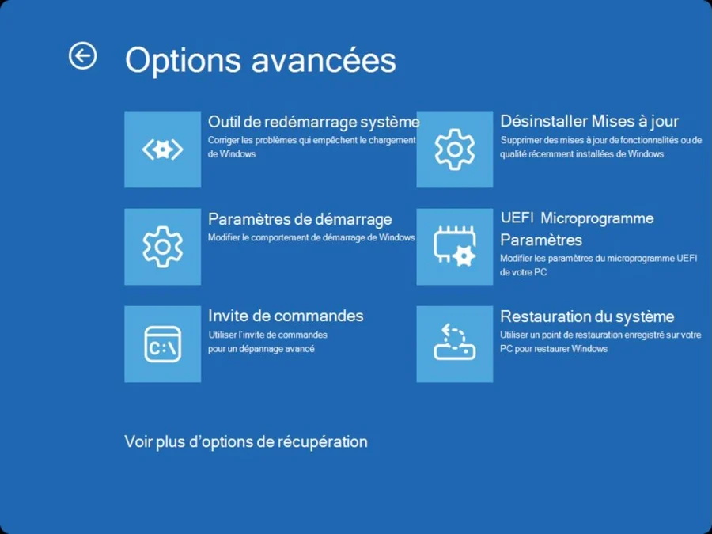

1
Ouvre la page Récupération
Paramètres › Système › Récupération
Touche Windows + I, puis Système › Récupération. À côté de Démarrage avancé, clique sur Redémarrer maintenant (enregistre ton travail avant).


Avant Windows, un petit programme gravé dans ta carte mère réveille ton PC, vérifie le matériel et choisit sur quel disque démarrer : le BIOS, qu'on appelle aujourd'hui UEFI.

Le BIOS (Basic Input/Output System) est le micrologiciel de ta carte mère : un programme rangé dans une puce, qui se lance dès que tu appuies sur le bouton, avant Windows. Sur les PC récents, il s'appelle UEFI, mais tout le monde dit encore « BIOS ».
Au démarrage, il initialise le processeur, la mémoire et les disques, et vérifie que tout répond (le fameux POST).
À chaque allumageIl suit l'ordre de démarrage (Boot) : SSD de Windows, clé USB, réseau… puis passe la main au système trouvé.
Le rôle cléL'UEFI a remplacé l'ancien BIOS : interface à la souris, gros disques, Secure Boot. Intel a retiré l'ancien mode « Legacy » de ses plateformes à partir de 2020, et Windows 11 exige un PC UEFI.
Le nom moderneLes réglages (date, ordre de démarrage…) sont conservés même PC éteint ; « Load Defaults » remet tout aux valeurs d'usine.
PratiqueDeux façons d'entrer dans le BIOS (UEFI) : depuis Windows 11, sans deviner la touche, ou avec une touche dès l'allumage.
Touche Windows + I, puis Système › Récupération. À côté de Démarrage avancé, clique sur Redémarrer maintenant (enregistre ton travail avant).

Sur l'écran bleu, choisis Dépannage, puis Options avancées, puis Paramètres du microprogramme UEFI et Redémarrer : le PC s'ouvre directement dans le BIOS.

Appuie plusieurs fois dès l'allumage : Suppr ou F2 sur la plupart des PC fixes (ASUS, MSI, Gigabyte, ASRock), F2 chez Dell, Acer, ASUS portables, F10 chez HP (ou Échap), F1/F2 chez Lenovo. Le menu de démarrage ponctuel est souvent sur F12, F11 ou F8.
Dans l'onglet Boot, place ta clé USB en Boot Option #1, puis Save & Exit (souvent F10). Pour une seule fois, le menu de démarrage (F12) suffit, sans rien changer.
Démarrer sur une clé USB d'installation : ordre de démarrage ou menu F12.
Intel VT-x / AMD SVM : nécessaires pour WSL 2, Docker Desktop ou une machine virtuelle.
Activer le TPM 2.0 (Intel PTT ou AMD fTPM) et le Secure Boot, exigés ou vérifiés par Windows 11 et certains jeux.
Activer le profil XMP / EXPO pour que la mémoire tourne à sa vitesse annoncée.
Outils intégrés (EZ Flash, M-Flash, Q-Flash…) avec le fichier du fabricant, pour la compatibilité et les failles corrigées.
Même rôle partout, mais un nom et une porte d'entrée différents selon l'appareil.
Bon pour : Démarrage avancé de Windows 11 ou touche Suppr / F2 à l'allumage.
Bon pour : maintenir le bouton marche : choix du disque, récupération, sécurité du démarrage.
Bon pour : ordre de démarrage (carte SD, USB, réseau) réglé avec raspi-config.

Chaque vidéo RepoPop Décode t'explique un sujet IA ou tech en moins d'une minute, avec sa fiche complète comme celle-ci.